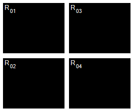
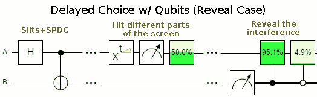

Ch1-Lecture 4¶
Delayed choice quantum eraser¶
A delayed-choice quantum eraser experiment, first performed by Yoon-Ho Kim, R. Yu, S. P. Kulik, Y. H. Shih and Marlan O. Scully, and reported in early 1999, is an elaboration on the quantum eraser experiment that incorporates concepts considered in Wheeler’s delayed-choice experiment from late 70s to early 80s . The experiment was designed to investigate peculiar consequences of the well-known double-slit experiment in quantum mechanics, as well as the consequences of quantum entanglement.
An argon laser generates individual 351.1 nm photons that pass through a double-slit apparatus (vertical black line in the upper left corner of the diagram).
An individual photon goes through one (or both) of the two slits. In the illustration, the photon paths are color-coded as red or green lines to indicate which slit the photon came through (red indicates slit A, green indicates slit B).
So far, the experiment is like a conventional two-slit experiment. However, after the slits, spontaneous parametric down-conversion (SPDC) is used to prepare an entangled two-photon state. This is done by a nonlinear optical crystal BBO (beta barium borate) that converts the photon (from either slit) into two identical, orthogonally polarized entangled photons with \(\frac{1}{2}\) the frequency of the original photon. The paths followed by these orthogonally polarized photons are caused to diverge by the Glan–Thompson prism.
One of these 702.2 nm photons, referred to as the “signal” photon (look at the red and green lines going upwards from the Glan–Thompson prism) continues to the target detector called \(D_0\). During an experiment, detector \(D_0\) is scanned along its x axis, its motions controlled by a step motor. A plot of “signal” photon counts detected by \(D_0\) versus x can be examined to discover whether the cumulative signal forms an interference pattern.
The other entangled photon, referred to as the “idler” photon (look at the red and green lines going downwards from the Glan–Thompson prism), is deflected by prism PS that sends it along divergent paths depending on whether it came from slit A or slit B.
Somewhat beyond the path split, the idler photons encounter beam splitters \(S_a\), \(S_b\), and \(S_c\) that each have a 50% chance of allowing the idler photon to pass through and a 50% chance of causing it to be reflected. \(M_a\) and \(M_b\) are mirrors.
The beam splitters and mirrors direct the idler photons towards detectors labeled \(D_1\), \(D_2\), \(D_3\) and \(D_4\). Note that:
If an idler photon is recorded at detector \(D_3\), it can only have come from slit B.
If an idler photon is recorded at detector \(D_4\), it can only have come from slit A.
If an idler photon is detected at detector \(D_1\) or \(D_2\), it might have come from slit A or slit B.
The optical path length measured from slit to \(D_1\), \(D_2\), \(D_3\) and \(D_4\) is 2.5 m longer than the optical path length from slit to \(D_0\). This means that any information that one can learn from an idler photon must be approximately 8 ns later than what one can learn from its entangled signal photon.
Let’s call the green path \(\left|0\right\rangle\) and red path \(\left|1\right\rangle\). The double slit can be described by a Hadamard gate. The SPDC corresponds to a CNOT-gate. The state after the SPDC \(\frac{1}{2} \left(\left|00\right\rangle+\left|11\right\rangle\right)\). There is a phase \(\phi\) depending on the position \(x\) of the detector \(D_0\), which corresponds to a phase gate \(R_\phi\). The state before the measurement is
Detection of the idler photon by \(D_3\) or \(D_4\) provides delayed “which-path information” indicating whether the signal photon with which it is entangled had gone through slit A or B. On the other hand, detection of the idler photon by \(D_1\) or \(D_2\) provides a delayed indication that such information is not available for its entangled signal photon. Insofar as which-path information had earlier potentially been available from the idler photon, it is said that the information has been subjected to a “delayed erasure”.
When the experimenters looked at the signal photons whose entangled idlers were detected at \(D_1\) or \(D_2\), they detected interference patterns.
However, when they looked at the signal photons whose entangled idlers were detected at \(D_3\) or \(D_4\), they detected simple diffraction patterns with no interference.
Let’s look at the probability to measure the a photon in \(D_0\).
If we measure the second photon in \(D_3\) or \(D_4\), the post measurement state collapses to \(\left|\pm\right\rangle\) basis. Then the probability for a click in \(D_0\) is \(\frac{1}{2}\) . This is independent of the phase: no interference.
If we measure the second photon in \(D_1\) or \(D_2\), the probability for a click at \(D_0\) is \(\frac{1}{2}\left(1\mp \cos\phi\right)\), so here we see the interference. Whether we see interference or not depends on the basis choice on the second system, which can be delayed.
 Simulated joint detection rates between \(D_0\) and \(D_1\), \(D_2\), \(D_3\), \(D_4\) (\(R_{01}\), \(R_{02}\), \(R_{03}\), \(R_{04}\)).
As you can see I have omitted the “coincidence counter” from the above description, similar to many people who talked about this experiment. Actually this is a key element. The coincidence counter would appear as a purely electronic device that acts on measurements. So if you would cast it as a quantum circuit it would look like this:

The data was always the same! The “erasure” only changes how we analyse the data, i.e. what we keep and what we discard. This is done after the measurement, using an electronic circuit. There’s no time travel, no disproof of materialism, just plain ‘ol correlation being mistaken for causation.
A full circuit can be found here for reference purposes
In fact you can even make classical analogues: Bob has a six-sided die, a two-sided coin, and a small empty box to put the coin in. He rolls the die, gets a result between 1 and 6, and places the coin in the box in a way that depends on the die roll. If the die roll was even, the coin is placed heads up. If the die roll was odd, the coin is placed tails up. Bob then writes down his die roll, and carefully hands the box to Alice.
Alice now has to decide to either a) just open the box or b) shake the box before opening it. (Shaking the box randomizes the coin.) Once the box is open, she writes down whether the coin was face up or face down, and also writes down whether or not she shook the box.

The tweaked delayed choice quantum eraser so that there isn’t a classical analogue is called a Bell test, however it lacks the “characteristics” of the delayed choice quantum eraser. For example, in order to avoid the signalling loophole, the choice can no longer be delayed.
Postulate 4: Measurement¶
How do we mathematically model the act of measuring or observing a quantum system considering that the very act of looking at or observing a quantum system irreversibly alters the state of the system? To model this phenomenon, we shall use the notion of a projective or von Neumann measurement (named after Hungarian child prodigy and mathematician, John von Neumann, who was apparently already familiar with calculus at the age of 8). To do so, we must define three classes of linear operators, each of which is increasingly more restricted. All three classes will prove vital throughout this course.
Hermitian operators: An operator \(M \in \mathcal L \left(\mathbb C^d \right)\) is Hermitian if \(M = M^\dagger\) . Examples you are already familiar with are the Pauli \(X\), \(Y\) , and \(Z\) gates, which are not only unitary, but also Hermitian. A Hermitian operator has the important property that all of its eigenvalues are real. Thus, Hermitian operators can be thought of as a higher dimensional generalization of the real numbers.
Positive semi-definite operators: If a Hermitian operator has only non-negative eigenvalues, then it is called positive-semidefinite. Thus, positive semi-definite (or positive for short) matrices generalize the non-negative real numbers.
Orthogonal projection operators: A Hermitian matrix \(\Pi \in \mathcal L \left(\mathbb C^d \right)\) is an orthogonal projection operator (or projector for short) if \(\Pi^2=\Pi\). This is equivalent to saying \(\Pi\) has only eigenvalues 0 and 1. Let us prove this equivalence briefly: Since \(\Pi\) is Hermitian, we can take its spectral decomposition, \(\Pi = \sum_i \lambda_i \left|\lambda_i\right\rangle\left\langle\lambda_i\right|\). Hence, $\( \sum_i \lambda_i \left|\lambda_i\right\rangle\left\langle\lambda_i\right|=\Pi =\Pi^2=\left(\sum_i \lambda_i \left|\lambda_i\right\rangle\left\langle\lambda_i\right|\right)\left(\sum_i \lambda_i \left|\lambda_i\right\rangle\left\langle\lambda_i\right|\right)=\sum_i \lambda_i^2 \left|\lambda_i\right\rangle\left\langle\lambda_i\right| \)$ where the last equality follows since {|λi i} is an orthonormal basis. Since the |λi i are orthogonal, we thus have that for all i, λi = λ2i . But this can only hold if λi ∈ {0, 1}, as claimed.
It is important to note that since a projector \(\Pi\)’s eigenvalues are all 0 or 1, its spectral decomposition must take the form \(\Pi=\sum_i \left|\psi_i\right\rangle\left\langle\psi_i\right|\), where \(\left\{\left|\psi_i\right\rangle\right\}\) are an orthonormal set. Conversely, summing any set of orthonormal \(\left\{\left|\psi_i\right\rangle\right\}\) in this fashion yields projector. Observe that a projector \(\Pi\) has rank 1 if and only if \(\Pi=\left|\psi\right\rangle\left\langle\psi\right|\) for some \(\left|\psi_i\right\rangle \in \mathbb C ^ d \) , since the rank of \(\Pi\) equals the number of non-zero eigenvalues of \(\Pi\), and here \(\Pi=\left|\psi\right\rangle\left\langle\psi\right|\) is a spectral decomposition of \(\Pi\). Finally,let us develop an intuition for what a projector actually does — for any projector \(\Pi=\sum_i \left|\psi_i\right\rangle\left\langle\psi_i\right|\) and state \(\left|\phi\right\rangle\) to be measured, we have $\( \Pi\left|\phi\right\rangle=\left(\sum_i \left|\psi_i\right\rangle\left\langle\psi_i\right|\right)\left|\phi\right\rangle=\sum_i \left|\psi_i\right\rangle\left(\left\langle\psi_i\middle|\phi\right\rangle\right)=\sum_i \left(\left\langle\psi_i\middle|\phi\right\rangle\right)\left|\psi_i\right\rangle\in\text{Span}\left\{\left|\psi_i\right\rangle\right\} \)$
where note \(\left\langle\psi_i\middle|\phi\right\rangle\in \mathbb C\). Thus, \Pi projects us down onto the span of the vectors \(\left\{\left|\psi_i\right\rangle\right\}\).
Send it after class 1¶
Verify that \(I\), \(\left|0\right\rangle\left\langle0\right|\), and \(\left|1\right\rangle\left\langle1\right|\) are all projectors. More generally, show that for arbitrary unit vector \(\left|\psi\right\rangle \in \mathbb C ^ d \) , \(\left|\psi\right\rangle\left\langle\psi\right|\) is a projector.
For \(\left\{\left|\psi_i\right\rangle\right\}\) orthonormal set, proove that \(\Pi=\sum_i \left|\psi_i\right\rangle\left\langle\psi_i\right|\) is a projector
Consider three-dimensional vector \(\left|\phi\right\rangle= \alpha\left|0\right\rangle + \beta\left|1\right\rangle + \gamma\left|2\right\rangle \in \mathbb C^3\) and \(\Pi= \left|0\right\rangle\left\langle0\right|+\left|1\right\rangle\left\langle1\right|\). Compute \(\Pi\left|\phi\right\rangle\), and observe that the latter indeed lies in the two-dimensional space \(\text{Span}\left(\{\left|0\right\rangle, \left|1\right\rangle\}\right)\)
Projective Measurements.¶
With projectors in hand, we can now define a projective measurement. A projective measurement is a set of projectors \(B = \left\{\Pi_i\right\}_{i=0}^m\) such that \(\sum_{i=0}^m \Pi_i = I\). The latter condition is called the completeness relation. If each \(\Pi_i\) is rank one, i.e. \(\Pi_i=\left|\psi_i\right\rangle\left\langle\psi_i\right|\), then we say that \(B\) models a measurement in basis \(\left\{\left|\psi_i\right\rangle\right\}\). Often, we shall measure in the computational basis, which is specified by \(B= \left\{\left|0\right\rangle\left\langle0\right|,\left|1\right\rangle\left\langle1\right|\right\}\) in the case of \(\mathbb C ^ 2\) (and generalizes as \(B= \left\{\left|i\right\rangle\left\langle,\right|\right\}_{i=0}^{d-1}\) for \(\mathbb C^d\))
With a projective measurement \(B = \left\{\Pi_i\right\}_{i=0}^m\subseteq\mathbb C^d\) in hand, let us specify how one uses \(B\). Suppose our quantum system is in state \(\left|\psi\right\rangle\in\mathbb C^d\) . Then, the probability of obtaining outcome \(i \in \{0, . . . , m\}\) when measuring \(\left|\psi\right\rangle\) with \(B\) is given by $\( \text{Pr}(\text{outcome } i) = \text{Tr}\left(\Pi_i \left|\psi\right\rangle \left\langle\psi\right|\Pi_i \right) = \text{Tr}\left(\Pi_i^2 \left|\psi\right\rangle \left\langle\psi\right|\right) = \text{Tr}\left(\Pi_i \left|\psi\right\rangle \left\langle\psi\right|\right), \)\( where the second equality follows by the cyclic property of the trace and the third since \)\Pi_i$ is a projector.
Send it after class 2¶
Let \(\left|\psi\right\rangle= \alpha\left|0\right\rangle + \beta\left|1\right\rangle \in \mathbb C^2\) . Show that if we measure in the computational basis, i.e. using \(B= \left\{\left|0\right\rangle\left\langle0\right|,\left|1\right\rangle\left\langle1\right|\right\}\), then the probabilities of obtaining outcomes 0 and 1 are \(\left|\alpha\right|^2\) and \(\left|\beta\right|^2\) , respectively.
The exercise above has an important moral — requiring a quantum state \(\left|\psi\right\rangle\) to be a unit vector (i.e. \(\left|\alpha\right|^2 + \left|\beta\right|^2 = 1\)) ensures that when measuring \(\left|\psi\right\rangle\), the distribution over the outcomes is a valid probability distribution, i.e. the probabilities for all possible outcomes sum to 1. The other important take-home message here is that measurements in quantum mechanics are inherently probabilistic — in general, the outcomes cannot be perfectly predicted! Finally, we started this lecture by saying that the very act of measuring a quantum state disturbs the system. Let us now formalize this; we will crucially use the fact discussed earlier that a projector projects a vector \(\left|\psi\right\rangle\) down into a smaller subspace. Specifically, upon obtaining outcome \(\Pi_i\) when measuring \(B\), the state of system “collapses” to
Note the denominator above is a scalar, and is just the probability of outcome \(i\). There are two points here which may confuse you: Why have we written the output state as a matrix \(\Pi_i \left|\psi\right\rangle \left\langle\psi\right|\Pi_i\) rather than a vector \(\Pi_i \left|\psi\right\rangle\), and what is the role of the denominator? Let us handle each of these in order.
First, conditioned on outcome \(\Pi_i\) , the output state is indeed a vector, namely \(\Pi_i \left|\psi\right\rangle\). However, there is a more general formalism which we shall discuss shortly called the density operator formalism, in which quantum states are written as matrices, not vectors. Specifically, the “density matrix” representing vector \(\left|\psi\right\rangle\) would be written as matrix \(\left|\psi\right\rangle \left\langle\psi\right|\). The density operator formalism is more general than the state vector approach we have taken so far, and will be crucial for studying individual subsystems of a larger composite quantum state. Thus, the answer to question 1 is that we have written the output as a matrix simply to slowly ease the transition into the density matrix formalism.
The motive behind question 2 is somewhat less sinister — the problem here is that since we projected out part of \(\left|\psi\right\rangle\) during the measurement, the output \(\Pi_i \left|\psi\right\rangle\) may not necessarily be normalized. To renormalize \(\Pi_i \left|\psi\right\rangle\), we simply divide by its Euclidean norm to obtain
The state \(\left|\psi^\prime\right\rangle\) describes the post-measurement state of our system, assuming we have obtained outcome \(i\).
A final quirk we should iron out is the following — in terms of measurements, what is the consequence of the fact that a projector \(\Pi_i\) satisfies \(\Pi_i^2 = \Pi_i\) ? Well, if you observe a quantum system now, and then again five minutes from now, and if the system has not been subjected to any gates or noise in between the measurements, then the two measurement results you obtain should agree (I realize the study of quantum mechanics has likely distorted your view of when you can trust your intuition, but this is one case in which you can). To model this, suppose we measure using \(B = \{\Pi_i\}\) and obtain results \(i\) and \(j\) in measurements 1 and 2, respectively. Then:
To simplify this expression, we use the fact that if the completeness relation holds for projectors \(\{\Pi_i\}\), i.e. \(\sum_i \Pi_i = I\), then it turns out that \(\Pi_j \Pi_1 = \delta_{ij} \Pi_i\), where recall \(\delta_ij\) is the Kronecker delta. Thus, if \(i\neq j\), above equation equals to 0, and if \(i = j\), it reduces to $\( \frac{\text{Tr}\Pi_j\Pi_i \left|\psi\right\rangle \left\langle\psi\right|\Pi_i\Pi_j }{\text{Tr}\left(\Pi_i \left|\psi\right\rangle \left\langle\psi\right| \right)}=\frac{\text{Tr}\left(\Pi_i^2 \left|\psi\right\rangle \left\langle\psi\right|\Pi_i^2 \right)}{\text{Tr}\left(\Pi_i \left|\psi\right\rangle \left\langle\psi\right| \right)}=\frac{\text{Tr}\left(\Pi_i \left|\psi\right\rangle \left\langle\psi\right|\Pi_i\right) }{\text{Tr}\left(\Pi_i \left|\psi\right\rangle \left\langle\psi\right| \right)}=\frac{\text{Tr}\left(\Pi_i \left|\psi\right\rangle \left\langle\psi\right|\right)}{\text{Tr}\left(\Pi_i \left|\psi\right\rangle \left\langle\psi\right| \right)}=1 \)$ i.e. measuring the state a second time again yields outcome i with probability 1, as desired. Thus, although observing a state for the first time disturbs it, subsequent measurements will consistently return the same measurement result!
We close this section by giving the circuit symbol which denotes a measurement of a qubit \(\left|\psi\right\rangle \in \mathbb C^2\) in the computational basis \(B= \left\{\left|0\right\rangle\left\langle0\right|,\left|1\right\rangle\left\langle1\right|\right\}\):

The double-wires on the right side indicate that the output of the measurement is a classical string (indicating which measurement outcome was obtained).
Send it after class 3¶
Show that (the density matrix) \(\left|\psi^\prime\right\rangle \left\langle\psi^\prime\right|\) equals the expression \(\frac{\Pi_i \left|\psi\right\rangle \left\langle\psi\right|\Pi_i }{\text{Tr}\left(\Pi_i \left|\psi\right\rangle \left\langle\psi\right| \right)}\)
Let \(\left|\psi\right\rangle= \alpha\left|0\right\rangle + \beta\left|1\right\rangle \in \mathbb C^2\). Show that if we measure in the computational basis, i.e. using \(B= \left\{\left|0\right\rangle\left\langle0\right|,\left|1\right\rangle\left\langle1\right|\right\}\) , and obtain outcome \(i \in \{0, 1\}\), then the post-measurement state is \(\left|i\right\rangle\) (or \(\left|i\right\rangle \left\langle i\right|\) in density matrix form).
Suppose we measure \(\left|0\right\rangle\) in basis \(B= \left\{\left|+\right\rangle\left\langle+\right|,\left|-\right\rangle\left\langle-\right|\right\}\). What are the probabilities of outcomes \(+\) and \(−\), respectively? What are the post-measurement states if one obtains outcome \(+\) or \(−\), respectively?
Quantum Teloprtation¶
With the concepts of the Bell state and measurement in hand, we can discuss our first neat computational trick: Quantum teleportation. Suppose you have a single-qubit quantum state \(\left|\psi\right\rangle= \alpha\left|0\right\rangle + \beta\left|1\right\rangle \) in your possession (i.e. as a physical system, not on paper), but that you do not know the values of \(\alpha\) and \(\beta\). Your friend Alice now phones you and asks to borrow your state. How can you send it to her? One obvious way is simply to pop your system in the mail and physically send it over. However, it turns out that by exploiting the phenomenon of entanglement, you can do something incredible — by sending two classical bits over the telephone to Alice, you can “teleport” \(\left|\psi\right\rangle\) instantly to her!
To teleport \(\left|\psi\right\rangle\), we assume that you and Alice each share half of a Bell state \(\left|\Phi^+\right\rangle=\frac{1}{\sqrt 2}\left(\left|00\right\rangle\right+\left|11\right\rangle\right)\) to begin with; specifically, you hold qubit 1 of \(\left|\Phi^+\right\rangle\), and Alice holds qubit 2. The teleportation circuit is then given as follows:

Let us break this down piece by piece. The first two wires are held by you; wire 1 holds the state to be teleported, \(\left|\psi\right\rangle\), and wire 2 holds your half of \(\left|\Phi^+\right\rangle\). The third wire holds Alice’s half of \(\left|\Phi^+\right\rangle\). Note that we have used \(\left|\Phi^+_A\right\rangle\) and \(\left|\Phi^+_B\right\rangle\) to denote the two “halves” of \(\left|\Phi^+\right\rangle\), but this is poor notation — read literally, this diagram suggests \(\left|\Phi^+\right\rangle=\left|\Phi^+_A\right\rangle\otimes\left|\Phi^+_B\right\rangle\), which is not true since is \(\left|\Phi^+\right\rangle\) entangled, and hence from last lecture we know that there do not exist states \(\left|\Phi^+_A\right\rangle\) and \(\left|\Phi^+_B\right\rangle\) such that \(\left|\Phi^+\right\rangle=\left|\Phi^+_A\right\rangle\otimes\left|\Phi^+_B\right\rangle\) This notation is for illustration purposes only, not to complicate the diagram, and make our analysis easy.
The circuit can be divided into 5 steps: Step 1 performs the CNOT, Step 2 the Hadamard gate, Step 3 measures qubits 1 and 2, Step 4 applies a conditional X gate, and Step 5 applies a conditional Z gate. The latter two require clarification: The conditional X gate here takes a classical bit \(b\) as input (hence the incoming wire at the top is a double line), and applies X if and only if \(b = 1\). The conditional Z gate is defined analogously.
Now that we have technically parsed this diagram, let us intuitively parse it. First, you begin in Steps 1 and 2 by performing a CNOT and Hadamard on your qubits, followed by a standard basis measurement in Step 3. Since a measurement in the standard basis maps each qubit to either \(\left|0\right\rangle\) or \(\left|1\right\rangle\), the output of your two measurements can jointly be thought of as one of the four bit strings \(00\), \(01\), \(10\), or \(11\). Call these bits \(b_0 b_1\) . Now you pick up the telephone, call Alice, and tell her the value of \(b_0 b_1\) . Conditioned on \(b_0 \) , she applies X to her half of the Bell pair, followed by Z conditioned on \(b_1\). The claim is that at this point, Alice’s qubit’s state has been magically converted to \(\left|\psi\right\rangle\). In fact, as we shall see shortly, \(\left|\psi\right\rangle\) has also disappeared from your possession! In this sense, teleportation has taken place.
Let us formally analyze the action of this circuit. Denote by \(\left|\psi_1\right\rangle\) for \(i \in \{0, . . . , 5\}\) the joint state of your and Alice’s systems immediately after Step \(i\) has taken place. Here, we define \(\left|\psi_0\right\rangle\) as the initial joint state before any gates are applied; it is given by
After Step 1, i.e. after the CNOT, we have state
After Step 2, i.e. after the Hadamard gate, we have
Let us now pause and analyze the state of affairs. There are four terms in this superposition, each of which begins with a distinct bit string \(\left|00\right\rangle\), \(\left|01\right\rangle\), \(\left|10\right\rangle\), or \(\left|11\right\rangle\). This means that if you now measure qubits 1 and 2 in the standard basis and obtain outcome (say) \(\left|00\right\rangle\), then Alice’s qubit on wire 3 collapses to the only consistent possibility, \(\alpha\left|0\right\rangle + \beta\left|1\right\rangle\). In this case, teleportation has already taken place.
Send it after class 4¶
Let \(\left|\phi|right\rangle\in (\mathbb C^2 )\otimes3\) denote the state in Equation above. Suppose you now measure qubits 1 and 2 in the standard basis. This can be modelled by projective measurement
where we have I on qubit 3 since we are not measuring it. Show that the probability of outcome 00 is 1/4. Next, show that conditioned on outcome 00, the post-measurement state collapses to \(\left|00\right\rangle\left(\alpha\left|0\right\rangle + \beta\left|1\right\rangle\right)\).
More generally, the four possible outcomes upon measuring qubits 1 and 2 result in four distinct residual states on Alice’s qubit as follows: $\( 00\rightarrow\alpha\left|0\right\rangle + \beta\left|1\right\rangle\qquad 01\rightarrow\alpha\left|1\right\rangle + \beta\left|0\right\rangle\qquad 10\rightarrow\alpha\left|0\right\rangle - \beta\left|1\right\rangle\qquad 11\rightarrow\alpha\left|1\right\rangle - \beta\left|0\right\rangle \)$
Thus, if you simply send the two bits \(b_0 b_1\) encoding the measurement outcome to Alice, then regardless of the value of \(b_0 b_1\) , she can recover your original state \(\left|\psi\right\rangle=\alpha\left|0\right\rangle + \beta\left|1\right\rangle \) via the following identities:
In other words, by conditionally applying X and Z based on the outputs \(b_0 b_1\) from your measurement, Alice can successfully recover your state \(\left|\psi\right\rangle=\alpha\left|0\right\rangle + \beta\left|1\right\rangle \) . This is precisely what is depicted in Steps 4 and 5 of the teleportation circuit. Finally, note that since measuring your qubits leaves you in one of the four standard basis states \(\left|00\right\rangle\), \(\left|01\right\rangle\), \(\left|10\right\rangle\), or \(\left|11\right\rangle\) the state \(\left|\psi\right\rangle\) has now “disappeared” from your possession!